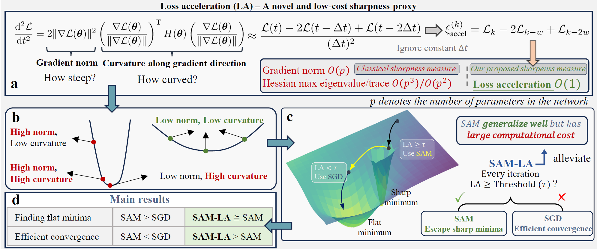
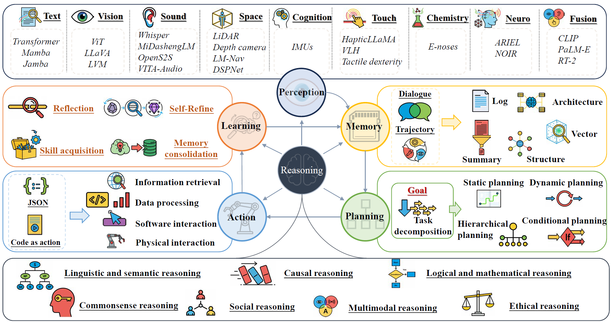

简介
你好！我是秦川（Chuan Qin），兰州大学信息科学与工程学院博士研究生三年级在读，导师为金洲教授。在回到学术界之前，我曾在 Anuttacon 担任 Technical Staff，并在 IDEA 研究院（International Digital Economy Academy）担任研究员。
我的研究位于深度学习理论与具身智能的交叉领域。我致力于开发能够提升神经网络泛化能力和训练效率的优化算法，并将这些理论洞察应用于机器人控制与决策。我特别关注如何用动态系统理论桥接现代深度学习 —— 理解训练动力学、锐度感知最小化（Sharpness-Aware Minimization）以及梯度流如何塑造大模型的泛化行为。我相信，对优化景观的深入理解是构建鲁棒、高效且可泛化的人工智能系统的关键。
我的工作获得了CCF-华为胡杨林基金、CCF-百度松果基金和中国人工智能学会-华为 MindSpore 学术奖励基金等项目的资助，相关成果发表于 Neural Networks、IEEE Transactions on Consumer Electronics、IEEE/CAA Journal of Automatica Sinica 及 NeurIPS 等期刊和会议。
业余时间我是一名长跑爱好者，最好成绩为 2024 兰州半程马拉松 1:42:38。
动态
- 2025.05 论文 Adaptive Gradient Activation for Federated Learning 发表于 IEEE TCE（IF=10.9）。
- 2025.04 论文 SAM-LA: Efficient Sharpness-Aware Minimization Training via Loss Acceleration 被 IEEE/CAA JAS（IF=18.3）接收，小修。
- 2025.03 论文 Adaptive Gradient Reshaping Boosting Generalization 被 IEEE TNNLS（SCI一区）接收，小修。
- 2025.01 综述论文 A Survey of Large-Model-Based AI Agents 被 Tsinghua Science and Technology 接收。
- 2024.12 论文 SAM-L: Switching SAM with Loss Gap for Efficient Training 投稿至 NeurIPS 2026，审稿中。
- 2024.06 完成兰州半程马拉松，完赛成绩 1:42:38。
学术论文
已发表 已接收 审稿中 * 表示共同第一作者，† 表示通讯作者。
-

SAM-LA: Efficient Sharpness-Aware Minimization Training via Loss AccelerationIEEE/CAA Journal of Automatica Sinica (JAS). IF=18.3 — 小修后接收。 -

-
 Adaptive Gradient Activation for Federated Learning on Consumer Electronic DevicesIEEE Transactions on Consumer Electronics (TCE), vol. 71, no. 2, pp. 5489-5500, 2025. IF=10.9
Adaptive Gradient Activation for Federated Learning on Consumer Electronic DevicesIEEE Transactions on Consumer Electronics (TCE), vol. 71, no. 2, pp. 5489-5500, 2025. IF=10.9 -

A Survey of Large-Model-Based AI AgentsTsinghua Science and Technology, In Press (DOI: 10.26599/TST.2026.9010072). -
AGRAdaptive Gradient Reshaping Boosting GeneralizationIEEE Transactions on Neural Networks and Learning Systems (TNNLS). SCI一区 — 小修。
-
CNOCollaborative Neurodynamic Optimization with Gradient Norm Penalty for Generalization ImprovementIEEE Transactions on Cybernetics (TCYB). IF=10.5 — 拒稿重投。
-
APQAnti-Perturbation Solution of Dynamic Multilinear Quaternion Tensor Equations With Application to ManipulatorsCAAI Transactions on Intelligence Technology. SCI一区 — 大修。
-
FSBFuzzy Sign-Based Collaborative Neurodynamic Optimization With Application to RobotsIEEE Transactions on Fuzzy Systems (TFS). SCI一区 — 审稿中。
-
SAM-LSAM-L: Switching SAM with Loss Gap for Efficient TrainingConference on Neural Information Processing Systems (NeurIPS), 2026. — 审稿中。
-
其他审稿中 / 已投稿论文• On Ternary Duality of Dynamical Systems, Information Theory, and Deep Learning — 投稿至 PANS（与金洲、曾志刚合作）
• Consistency is Key of Fitting and Degradation Alleviating for Deep Neural Networks — 审稿中，IEEE TNNLS
• Quantum-Inspired Collaborative Neurodynamic Optimization for Traffic Flow Prediction — 审稿中，IEEE TCE
• Understanding Residual Neural Networks from Sampling Theorem Perspective — 审稿中，IEEE TETCI
完整论文列表及 BibTeX 请见 Google Scholar。
科研项目
-
微分方程诠释的大模型泛化和鲁棒性研究项目负责人。负责项目申请书撰写、中期考核汇报及最终结项；主导研究方案设计与执行，利用神经微分方程（Neural ODEs）解释并改进基础模型的泛化性与鲁棒性。
-
神经微分方程诠释大模型的稳定性、收敛性及优化策略研究项目负责人。全流程管理项目（申请撰写、中期考核、结项验收）；独立承担核心算法研发，研究神经微分方程如何解释大规模模型训练动力学并指导优化策略。
-
基于 MindSpore 的微分方程诠释的深度神经网络结构设计与优化器构建共同负责人。参与核心算法设计与实验验证，在华为 MindSpore 框架上构建神经微分方程启发的网络结构与优化器。
-
神经 ODE 基础理论与学习算法及应用核心成员。负责神经 ODE 基础理论及其在动态系统与控制中应用的算法设计与实验。
-
面向藏语信息处理的大语言模型的稳定性、收敛性及优化策略研究核心成员。负责算法设计与实验，提升藏语大语言模型训练稳定性与收敛性。
工作经历
-
Technical StaffAnuttacon2024 — 至今
-
研究员IDEA 研究院（International Digital Economy Academy）2022.04 — 2024.04
-
博士研究生兰州大学 信息科学与工程学院2022 — 至今
-
硕士研究生兰州大学2019 — 2022
-
本科兰州大学2015 — 2019
指导学生
我曾指导以下学生开展科研项目：
Kenkun Liu — 香港中文大学（深圳）CUHK-SZ
荣誉奖项
- 年会论文一等奖
- 学业奖学金一等奖
- 兰州大学优秀研究生
- CCF-华为胡杨林基金获得者（2024）
- CCF-百度松果基金获得者（2023）
- 中国人工智能学会-华为 MindSpore 学术奖励基金获得者（2022）
其他
运动
半程马拉松爱好者。参赛记录：2024 兰州半程马拉松（1:42:38），2024 营山半程马拉松（1:53:39）。
语言
中文（母语），英语（CET-6，具备阅读与撰写英文学术论文的专业能力）。